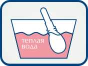
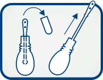

Порошок для приготовления раствора Тантум® Роза
Порошок для приготовления раствора Тантум® Роза - нестероидный противовоспалительный препарат комплексного действия для снятия неприятных симптомов в интимной области в экономичной форме (саше).

-
Разрешен
беременным
и кормящим3Подходит
беременным
и кормящим3 -
Восстанавливает
микрофлору2Избирательно
действует на
вагинальную
микрофлору, подавляя
рост и активность
только
болезнетворных
микроорганизмов2 -
Борется
с воспалением3Помогает
организму бороться
с воспалением3 -
Без возрастных
ограничений3Не имеет
возрастных
ограничений3 -
Снимает боль,
зуд и жжение1Облегчает боль,
зуд и жжение через 20
минут после
1-го применения1. А после
3-го применения
наблюдается
заметное улучшение
общего состояния1 -
Экономия
времениЭкономия времени:
раствор готов
к применению
Более подробную информацию вы можете прочитать в инструкции по применению.
Способ применения

Содержимое 1 пакетика растворить в 500 мл кипяченой воды

Для разового спринцевания использовать 140 мл полученного раствора. Приготовленный раствор может храниться до 5 суток при комнатной температуре.
Более подробную информацию вы можете прочитать в инструкции по применению.
Вас может заинтересовать:
Heading
Производство препарата осуществляется на фармакологическом заводе Италии. Он является, по праву, самым качественным средством от лечения молочницы. Производство препарата осуществляется на фармакологическом заводе Италии. Он является, по праву, самым качественным средством от лечения молочницы
Heading
Производство препарата осуществляется на фармакологическом заводе Италии. Он является, по праву, самым качественным средством от лечения молочницы. Производство препарата осуществляется на фармакологическом заводе Италии. Он является, по праву, самым качественным средством от лечения молочницы